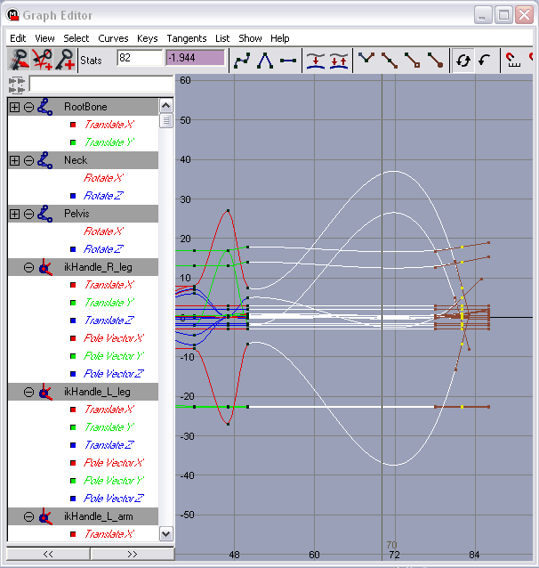

Maya PLE Character Model Tutorial Part 3
Animation 101: A Walk Cycle
Animating all the sequences that the UT2003 characters use seems like quite a task, even for seasoned animators. Luckily, as mentioned, that need not be done. For this tutorial a walk cycle and an "idling" sequence will be enough to illustrate many later procedures.
69. First adjust the animation-related UI elements: set the Range Slider to Start Time=0, Playback Start Time=0, Playback End Time=50, End Time=50. In Animation Preferences, set the Playback prefs to Update View=Active, Looping=Continuous, and Playback Speed to Other, entering 1.25 in the Other text entry field on the right (this equals 24fps x 1.25 = 30fps, a de facto "standard" for playback rates of game animations). Click Save. Use Window>Animation Editors>Graph Editor to open the Graph Editor dialog.
70. Drag the Time Slider marker to frame 0, or enter 0 in the Current Time field.
71. In the Channel Box select the channels to keyframe by clicking on their labels to the left of the data entry fields. Click-drag and Ctrl-click to select the following:
Translate X, Translate Y, Translate Z, Pole Vector X, Pole Vector Y, Pole Vector Z.
In Outliner, select all the ikHandle_ objects.
Use Animate>Set Key>OPTIONS to open the dialog for Set Key, and set the options as shown in FIG 20. Then click Set Key.
![[MCMT-20-KeyOptions]](images/mcmt-20-keyoptions.gif) FIG.20 Set Key Options |
71. Move to frame 5 in the Time Slider, then click in the title bar of the Graph Editor and press s (lower case) to set a key at frame 5. In like manner set another key at frame 10.
The key at frame 0 preserves the Bind Pose IK handle positions, and that at frame 5 "isolates" frame 0 from the influence of keys at frames beyond 5.
Since the 2 animation sequences for TinCanMan will be done in a single file, they should be separated by a "buffer" of a number of frames, so keyframes in one sequence don't influence motion in another. For example, TinCanMan will have sequences from frame 10 to frame 42, and from frame 50 to frame 98. A key (actually a set of keys for multiple channels) placed at frame 47 will help prevent the sequences from affecting one another. The reason for this will become clearer when examining the Graph Editor's animation curves.
72. A "ground plane" is a helpful reference when animating footsteps, so use Create>Polygon Primitives>Plane>OPTIONS to create a poly plane with the settings in FIG 21. Move the plane to Translate Y= -23.00
![[MCMT-21-GroundPlane]](images/mcmt-21-groundplane.gif) FIG 21. Ground plane parameters |
73. In Outliner, select ikHandle_R_leg, and move it in Z to Translate Z=7.2.
Then select ikHandle_L_leg and move in Z to Translate Z= -7.0.
Select both ikHandle_R_leg and ikHandle_L_leg, select the channel label Translate Z in the Channel Box, click on the Graph Editor title bar, and press s to set a key at frame 10 for the changed values (alternately, use Animate>Set Key).
Note how the animation curves in the Graph Editor change – those for Translate Z of both the leg IK handles now curve.
Frame 10 is the first frame of the walk cycle animation.
74. Move the Time Slider to frame 42 and set a key for the legs' IK handles. Since a walk cycle loops through a series of frames, the beginning and end frames must be identical.
75. Set the Time Slider to frame 26, the midpoint of the 32-frame sequence. Now switch the positions of the right & left legs, easiest to accomplish by selecting each and entering the Z value of the other in the Channel Box. Set a key for these values of Translate Z.
The curve in the Graph Editor now depicts the sine-wave shape of the forward & backward leg movement (FIG 22).
![[MCMT-22-ZCurves]](images/mcmt-22-zcurves.gif) FIG 22. Z-axis animation curves for legs |
Set the Playback Start Time to 10, the Playback End Time to 42, and Play Forward the animation loop. Not very aesthetic, but the legs do move. The motion will be polished later.
NOTE: Once keyframes are applied to the IK handles, Skeleton>Assume Preferred Angle and Skin>Go To Bind Pose will not work properly while the IK solver nodes are active. To use these commands with keyframed IK handles in place, use the main menu item Modify>Enable Nodes>Disable All first. With nodes disabled, the IK handle keyframes are inactive. Use Modify>Enable Nodes>Enable All to restore their operation. Or, more selectively, you can uncheck/check the IK Solvers item in the Modify>Enable Nodes> roll-out.
76. Return to frame 10 to position the arms for the sequence's first frame.
Position ikHandle_R_arm at Translate X= -8.0 and , Translate Y= -2, Translate Z= -4.50.
Position ikHandle_L_arm at Translate X=8.0 and Translate Y= -2, Translate Z= 6.0.
Set a key for Translate X, Y, and Z. Move to frame 42 and set a key.
77. Move to frame 26 and switch the arm positions, them set a key for Translate Z (X & Y don't change, so a key isn't needed for them).
78. Play Forward the animation – again, not very pretty, but functional for the tutorial. To smooth the motion a bit, especially the transition from last to first frames of the loop, select the IK handles for both arms & both legs, then in the Graph Editor select all the visible keyframes.
In the Graph Editor tool shelf, click on the icon for Flat Tangents (horizontal line with keyframe squares at either end). This will change the shape of the curves between keyframes, making the slope of the curves as they enter frame 42 the same as that leaving frame 10.
79. To tweak the leg motion into something more naturalistic, set the following keys for the legs:
| FRAME NO. | IK HANDLE or BONE | CHANNEL | KEY VALUE |
| 10 & 42 | ikHandle_Spine01 | Pole Vector X | 0.45 |
| 26 | ikHandle_Spine01 | Pole Vector X | - 0.45 |
| 10 & 42 | ikHandle_Spine02 | Pole Vector X | 0.45 |
| 26 | ikHandle_Spine02 | Pole Vector X | - 0.45 |
| 10 & 42 | Pelvis | Rotate X | 8.0 |
| 26 | Pelvis | Rotate X | - 8.0 |
| 10 & 42 | Neck | Rotate X | 8.0 |
| 26 | Neck | Rotate X | - 8.0 |
| 10, 26 & 42 | RootBone | Translate Y | 0 |
| 8 & 34 | RootBone | Translate Y | 0.25 |
| 10, 26 & 42 | ikHandle_Spine01 | Translate Y | 13.0 |
| 8 & 34 | ikHandle_Spine01 | Translate Y | 13.25 |
These keys can be selected and given Flat Tangents to keep them smooth through the cycle.
Note how the settings follow a cyclical pattern. For more naturalistic movement in "organic" characters, it's often useful to shift the frame number of some keyframes forward or backward a bit so the motion isn't absolutely synchronized to certain frames numbers. Using other than Flat Tangents is another technique worthy of exploration.
Animation 102: Just Hangin'
The other animation sequence to create is an "idle" action, for when the character is not walking. This sequence will start at frame 50 and initially end at frame 82. Frames 43 - 49 will be the "buffer". "Isolating" keyframes will be set at frame 47.
80. In Outliner, select RootBone, Pelvis, Neck and all the IK handles – these are the scene objects with keyframes. In the Graph Editor, make sure no keys are selected and press f (lower case). This brings all visible keys into view in the graph window. Select all keys at frame 5. Set the Current Time to 47.
In the Graph Editor menu, use Edit>Copy, then Edit>Paste to copy the frame 5 keys to frame 47. Move to frame 50 and Edit>Paste again (in the Graph Editor).
The frame 5 values were chosen because they set the model back to the upright Bind Pose, which will be simpler to adjust to a new pose than having to "un-pose" the final frames of the walk animation.
81. Rather than step through the keyframing for the idling sequence, the keyframe values to set are given in a table as above. Study the result in the Graph Editor to learn what the keys do to affect the model's motion.
| FRAME NO. | IK HANDLE or BONE | CHANNEL | KEY VALUE |
| 0 & 47 | RootBone | Translate X | 0 |
| 50 | RootBone | Translate X | 0.864 |
| 50 | RootBone | Translate Y | 0.959 |
| 0 & 47 | Pelvis | Rotate Z | 0 |
| 50 | Pelvis | Rotate Z | 5.0 |
| 0 & 47 | Neck | Rotate Z | 0 |
| 50 | Neck | Rotate Z | 5.0 |
| 50 | ikHandle_Spine01 | Translate Y | 14.0 |
| 50 | ikHandle_Spine01 | Pole Vector X | 0 |
| 50 | ikHandle_Spine02 | Translate X | 0.782 |
| 50 | ikHandle_Spine02 | Translate Y | 17.822 |
| 50 | ikHandle_Spine02 | Pole Vector X | 0 |
| 50 | ikHandle_R_arm | Translate X | - 6.672 |
| 50 | ikHandle_R_arm | Translate Y | - 1.5 |
| 50 | ikHandle_R_arm | Translate Z | - 0.25 |
| 50 | ikHandle_L_arm | Translate X | 7.53 |
| 50 | ikHandle_L_arm | Translate Y | - 1.5 |
| 50 | ikHandle_L_arm | Translate Z | 0.25 |
82. After setting these keys, select all the keyframed objects. Then select their frame 50 keys in the Graph Editor. Go to frame 82, then Edit>Copy and Edit>Paste the selected keys using the Graph Editor's menu. Then Play Forward frames 50 - 82.
When the laughter dies down, notice that even though the key values are the same at the start & end of the sequence, there is still a lot of motion in the "tween" frames. Looking at the Graph Editor explains this – the tangents through the keyframes are not all flat, and in some cases produce very pronounced animation curves (FIG 23), indicating substantial value change over time from frame 50 to 82 (i.e., motion).

FIG 23. Pronounced animation curves = large motions |
83. All the curves could be flattened, but that would mean setting new keys to get the motion back. Better just to edit the existing curves. Here are recommendations:
| IK HANDLE or BONE | CHANNEL | KEYS AT FRAME NO. | EDIT TO CURVE |
| RootBone | Translate X | 0 & 47 | Flatten |
| RootBone | Translate X | 50 & 82 | Make the curve shallower and symmetrical by adjusting the slope of the incoming and outgoing curves |
| RootBone | Translate Y | 50 & 82 | Flatten |
| Pelvis | Rotate Z | 0 & 47 | Flatten |
| Pelvis | Rotate Z | 50 & 82 | Make the curve shallower and symmetrical by adjusting the slope of the incoming and outgoing curves |
| Neck | Rotate Z | 0 & 47 | Flatten |
| Neck | Rotate Z | 50 & 82 | Make the curve shallower and symmetrical by adjusting the slope of the incoming and outgoing curves |
| ikHandle_Spine01 | Translate Y | 50 & 82 | Flatten |
| ikHandle_Spine01 | Pole Vector X | 50 & 82 | Flatten |
| ikHandle_Spine02 | Translate X | 50 & 82 | Make the curve shallower and symmetrical by adjusting the slope of the incoming and outgoing curves |
| ikHandle_Spine02 | Translate Y | 50 & 82 | Make the curve shallower and symmetrical by adjusting the slope of the incoming and outgoing curves |
| ikHandle_Spine02 | Pole Vector X | 50 & 82 | Flatten |
| ikHandle_R_arm | Translate X | 50 & 82 | Make the curve shallower and symmetrical by adjusting the slope of the incoming and outgoing curves |
| ikHandle_R_arm | Translate Y | 50 & 82 | Make the curve shallower and symmetrical by adjusting the slope of the incoming and outgoing curves |
| ikHandle_R_arm | Translate Z | 50 & 82 | Flatten |
| ikHandle_L_arm | Translate X | 50 & 82 | Make the curve shallower and symmetrical by adjusting the slope of the incoming and outgoing curves |
| ikHandle_L_arm | Translate Y | 50 & 82 | Make the curve shallower and symmetrical by adjusting the slope of the incoming and outgoing curves |
| ikHandle_L_arm | Translate Z | 50 & 82 | Flatten |
The idling action needs to be subtle, so some of the curves (such as Translate X & Y for the arms) need to be made very shallow.
83. The final keys to add to the idling sequence are:
| FRAME NO. | IK HANDLE or BONE | CHANNEL | KEY VALUE |
| 60 | ikHandle_R_arm | Translate Z | 0.25 |
| 72 | ikHandle_L_arm | Translate Z | - 0.25 |
This adds a bit of swing to the arms.
Tweak the curves until you like the action, keeping in mind it should be subtle. Even with very small motions, though, TinCanMan looks a bit twitchy, so the action needs to be slowed a bit.
84. Select all the keyframed objects in Outliner. In the Graph Editor, select all the keys from frame 50 to frame 82 inclusive. In the Graph Editor menu, use Edit>Scale>OPTIONS to open the Scale Keys dialog. Enable the Method: Start and Stop radio button, and check Only Scale Specified Keys. In the New Start/End Times field enter 50 and 98, respectively. Then click Scale.
The animation is now 49 frames long, about 33% slower. Play Forward and see how it affects the idling action – quite a bit more relaxed-looking. FIG 24 shows the Graph Editor curves for the finished "idling" animation.
![[MCMT-24-IdleAnimCurves]](images/mcmt-24-idleanimcurves.gif) |
TinCanMan's two simple animation sequences are done.
Consider for a moment the time and skill required to animate the full range of character motions in the "stock" UT2003 models – no mean feat.
Next up: Texturing TinCanMan